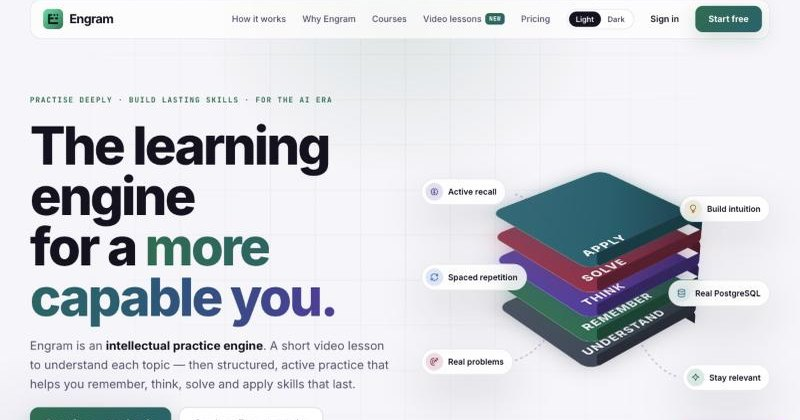

Engram
Skills practice engine · engramskill.com
SQL is live, on a real PostgreSQL engine that runs in the browser. Published as 5 levels, 17 chapters, 203 video lessons and 203 practice missions, with three SQL chapters free and no sign-in.
Planned: Python, data analysis, machine learning and system design, on the same engine.